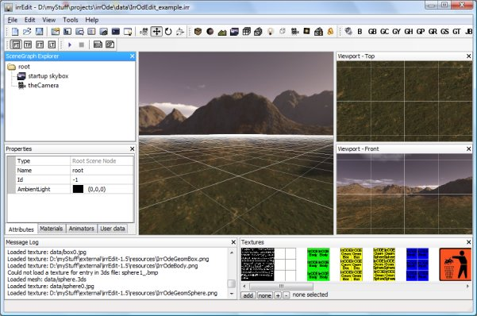
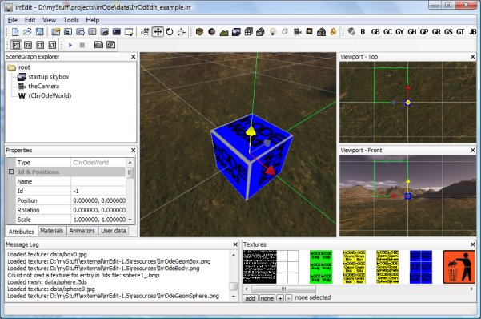
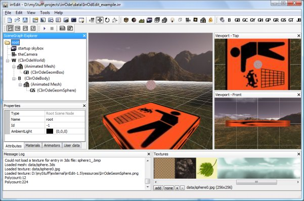
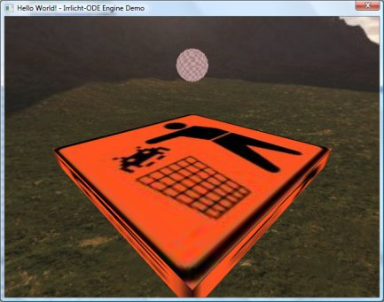

Step 1: install IrrOdEdit
Copy the file IrrOdEdit.dll to the "<IrrEdit Directory>/plugins" and the content of the "<IrrODE Directory>/data/IrrOdEdit" to the "<IrrEdit Directory>/resources". After starting IrrEdit you should be able to add all IrrODE scene nodes in the editor.
Step 2: creating an IrrODE scene in IrrEdit
We start with an empty scene that just contains a skybox and a camera

Next we add a CIrrOdeWorld scene node and adjust it's parameters. Set the position to (0,0,0) and the gravity to (0,-10,0). The cube that shows the world will not be visible in the application, it's just a dummy that is displayed so there is something to display in the editor. This is the same for all IrrODE scene nodes.

Next we add the box that our sphere will drop on. First we need to add an AnimatedMeshSceneNode and set it's texture, next we add a CIrrOdeGeomBox scene node and adjust the parameters of all these nodes. Set the position of both the AnimatedMeshSceneNode and the CIrrOdeGeomBox scene node to (0,0,0), then check the "mode_bounce" flag of the CIrrOdeGeomBox and set it's "bounce" attribute to 1.

In order to get some dynamic stuff into our scene we will add a sphere that will bounce off our static box. I think I heard that before ... somewhere. First we add a CIrrOdeBody scene node as child of the CIrrOdeWorld node. Set it's position to (0,15,0). Next we need another AnimatedMeshSceneNode as child of our body. The position of this new node needs to be (0,0,0). We're almost done now, all that's left to do is to add a CIrrOdeGeomSphere scene node as child of the child of our body. Set it's position to (0,0,0) as well and don't forget to make the surface bouncy by checking the "mode_bounce" flag and setting the "bounce" attribute to 1.

Now save the scene so that you can load it later on.
Step 3: loading the scene from an IrrODE program
Before we can do this you have to go throught the first 3 steps of the first tutorial in order to get an empty IrrODE application. After that instead of adding the the IrrODE scene nodes by hand we just load the file we have created before.
smgr->loadScene("data/IrrOdEdit_example.xml");
Now the code of your main file should look something like this:
#include <irrlicht.h>
#include <IrrODE.h>
using namespace irr;
using namespace core;
using namespace scene;
using namespace video;
using namespace io;
using namespace gui;
using namespace ode; //This is the namespace of all IrrODE stuff
int main(int argc, char** argv) {
IrrlichtDevice *device=createDevice(EDT_DIRECT3D9,
dimension2d(640,480),
16,false,false,false,0);
device->setWindowCaption(L"Hello World! - Irrlicht-ODE Engine Demo");
IVideoDriver *driver = device->getVideoDriver();
ISceneManager *smgr = device->getSceneManager();
IGUIEnvironment *guienv = device->getGUIEnvironment();
ICursorControl *pCursor=device->getCursorControl();
pCursor->setVisible(false);
CIrrOdeSceneNodeFactory cFactory(smgr);
smgr->registerSceneNodeFactory(&cFactory);
smgr->loadScene("data/IrrOdEdit_example.xml");
//init the ODE
CIrrOdeManager::getSharedInstance()->initODE();
CIrrOdeManager::getSharedInstance()->initPhysics();
//set IrrODE's timer
ITimer *pTimer=device->getTimer();
CIrrOdeManager::getSharedInstance()->setTimer(pTimer);
ICameraSceneNode *cam=reinterpret_cast<ICameraSceneNode *>
(smgr->getSceneNodeFromName("theCamera"));
cam->setTarget(vector3df(0,0,0));
while (pTimer->isStopped()) pTimer->start();
//let's run the loop
while(device->run()) {
//step the simulation
CIrrOdeManager::getSharedInstance()->step();
//now for the normal Irrlicht stuff ...
//begin, draw and end scene
driver->beginScene(true, true, SColor(0,200,200,200));
smgr->drawAll();
guienv->drawAll();
driver->endScene();
}
//drop the world so it is destroyed
device->drop();
return 0;
} After you got everything compiled and started you have almost the same result as in tutorial01 (ok, this one looks better because of the skybox), but this time by using IrrEdit and with much less programming work.
